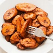

Dodo

Description
Fried plantains, also known as "Dodo" are a quick and easy side dish or snack. They are sweet, crispy and golden, making them the perfect accompaniment to any Nigerian meal.
Ingredients
- Ripe Plantains
- Salt
- Oil for frying
Steps
- Peel and slice the plantains into desired shapes.
- Heat oil in a frying pan and add the plantains.
- Fry until they turn golden brown on both side.
- Sprinkle with a little salt and serve.